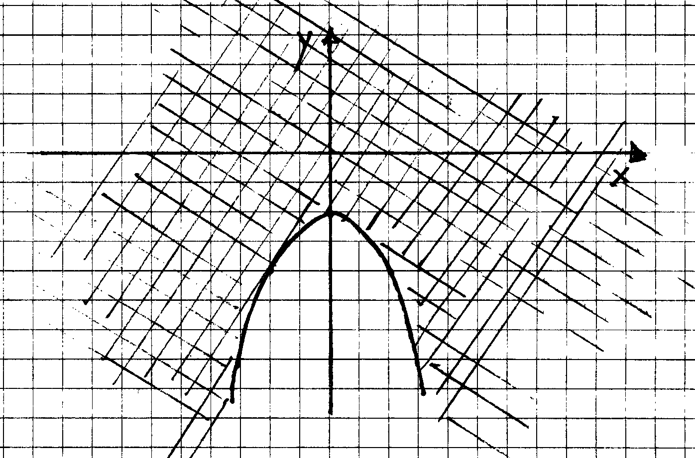
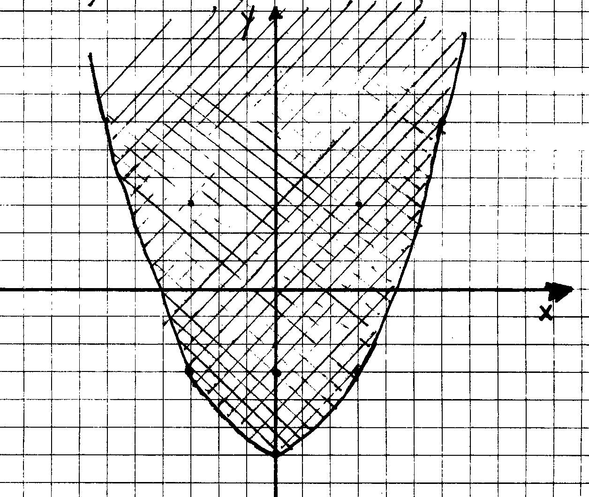
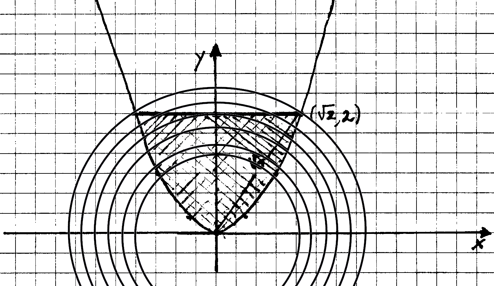

-
Si trovi la soluzione generale della seguente equazione:
SOLUZIONE:(a) Il polinomio caratteristico dell'equazione l3-5l2+7l-3
si fattorizza in (l-3)(l-1)2.
La soluzione associata alla radice l1
= 3 è e3x e le soluzioni associate alla radice doppia
l2,3 = 1 sono ex e xex.
La soluzione generale quindi è y(x) = c1e3x+(c2+c3x)ex.
(b) Il polinomio caratteristico dell'equazione l3+5l2+7l+3
si fattorizza in (l+3)(l+1)2.
La soluzione associata alla radice l1
= -3 è e-3x e le soluzioni associate alla radice doppia
l2,3 = -1 sono e-x e xe-x.
La soluzione generale quindi è y(x) = c1e-3x+(c2+c3x)e-x.
-
Si risolva il seguente problema di Cauchy:
SOLUZIONE:(a) Si tratta di un equazione omogenea. La trasformazione
standard u = y/x (in modo che y¢ = u+xu¢)
porta all'equazione a variabili separabili xu¢
= 1/u che ha soluzione generale (u(x))2 = c+2lnx e quindi (y(x))2
= cx2+2x2lnx. Osservando che 1 = y(1)
> 0 si ottiene che 1 = y(1)2 = c+2ln1 e quindi la soluzione
è y(x) = xÖ{1+2lnx}.
(b) Si tratta di un equazione omogenea. La trasformazione standard
u = y/x (in modo che y¢ = u+xu¢)
porta all'equazione a variabili separabili xu¢
= -1/u che ha soluzione generale (u(x))2 = c-2lnx e quindi (y(x))2
= cx2-2x2lnx. Osservando che 2 = y(1)
> 0 si ottiene che 4 = y(1)2 = c+2ln1 e quindi la soluzione
è y(x) = xÖ{4-2lnx}.
-
Si determini la soluzione generale del seguente sistema di equazioni differenziali
e si classifichi il flusso associato allo spazio delle soluzioni:
SOLUZIONE:(a) La matrice associata al sistema è ([1
3 || ( -1 -1)]) e ha polinomio caratteristico l2+2
= (l-Ö2i)(l+Ö2i).
Gli autovettori (v1,v2) associati a Ö2i
soddisfano (1-Ö2i)v1+3v2
= 0 e quindi possiamo prendere (v1,v2) = (3,Ö2i-1).
Infine, una base per lo spazio delle soluzioni del sistema si ottiene considerando
la parte reale e la parte immaginaria di ((3(cosÖ2x+isinÖ2x))
|| ( (Ö2i-1)(cosÖ2x+isinÖ2x)))
e quindi la soluzione generale è
|
ì
í
î |
|
| y1(x) = 3c1cosÖ2x+3c2sinÖ2x |
|
| y2(x) = -c1(cosÖ2x+Ö2sin2x)+c2(Ö2cosÖ2x-sinÖ2x) |
|
|
. |
|
Il flusso associato allo spazio delle soluzioni è un centro in
quanto gli autovalori sono numeri complessi puramente immaginari.
(b) La matrice associata al sistema è ([1 2 ||
( -1 -1)]) e ha polinomio caratteristico l2+1
= (l-i)(l+i). Gli
autovettori (v1,v2) associati a l
= i soddisfano (1-i)v1+2v2 = 0 e quindi possiamo
prendere (v1,v2) = (2,i-1). Infine, una base per
lo spazio delle soluzioni del sistema si ottiene considerando la parte
reale e la parte immaginaria di ((2(cosx+isinx)) || ( (i-1)(cosx+isinx)))
e quindi la soluzione generale è
|
ì
í
î |
|
|
|
| y2(x) = -c1(cosx+sinx)+c2(cosx-sinx) |
|
|
. |
|
Il flusso associato allo spazio delle soluzioni è un centro in
quanto gli autovalori sono numeri complessi puramente immaginari.
-
Sia Dom(f) il dominio della funzione
| (a) f(x,y) = |
æ
Ö |
|
e-xy(y+2+x2)
|
|
|
| (b) f(x,y) = |
æ
Ö |
|
exy(y+2-x2)
|
|
|
Dopo aver tracciato la figura di Dom(f), se ne determini l'interno,
la chiusura, la frontiera e il derivato.
SOLUZIONE:(a) Il dominio della funzione si ottiene risolvendo
la disequazione y+2+x2 ³ 0 (l'esponenziale,
in quanto sempre positivo è ininfluente ai fini dell'esistenza della
funzione). Il grafico:

Quindi
Dom(f)0 = {(x,y) Î
R2 t.c. y > -2-x2},
[`(Dom(f))] = Dom(f),
¶(Dom(f)){(x,y) Î
R2 t.c. y = -2-x2} e
D(Dom(f)) = Dom(f).
(b) Il dominio della funzione si ottiene risolvendo la disequazione
y+2-x2 ³ 0 (l'esponenziale,
in quanto sempre positivo è ininfluente ai fini dell'esistenza della
funzione). Il grafico:

Quindi
Dom(f)0 = {(x,y) Î
R2 t.c. y > -2+x2},
[`(Dom(f))] = Dom(f),
¶(Dom(f)){(x,y) Î
R2 t.c. y = -2+x2} e
D(Dom(f)) = Dom(f).
-
Dopo averne tracciato la figura, si dimostri che il seguente sottoinsieme
di R2 non è compatto costruendo un ricoprimento
di aperti che non ammette un sottoricoprimento finito.
| S = {(x,y) Î R2
t.c. y Î [0,2] e y
> x2} |
|
SOLUZIONE: La figura è la seguente:

Si consideri la seguente famiglia:
È necessario verificare che:
1. La famiglia è un ricoprimento cioè che S Ì
Èn Î
NDÖ6-1/n((0,0))
2 Il ricoprimento non ammette un sottoricoprimento finito cioè
(essendo il ricoprimento telescopico) che per ogni n0 Î
N,
Per verificare 1. basta osservare che se (a,b)
Î S, allora esiste d
> 0 tale che a2+b2
= Ö6-d e quindi
(a,b) Î
DÖ6-1/n((0,0)) per
tutti gli n > [1/( d)].
Per verificare 2. basta osservare che il punto (Ö{(Ö6-[1/(
n0)])2-4},2) Î S
non appartiene a DÖ6-[1/( n0)]((0,0))
qualunque sia n0 Î N.
-
Si discuta la continuità della seguente funzione f:R2®R:
| (a) f(x,y) = |
ì
ï
ï
ï
í
ï
ï
ï
î |
|
|
|
|
| (b) g(x,y) = |
ì
ï
ï
ï
í
ï
ï
ï
î |
|
|
|
|
SOLUZIONE: (a) La funzione è sicuramente continua per
tutti i valori di (x,y) per cui non si annulla il denominatore y2+(arctanx)2.
Quest'ultimo si annulla esclusivamente per (x,y) = (0,0). Adesso utilizzando
la disuguaglianza |ab|/(a2+b2)
£ 1, otteniamo che per (x,y) ¹
(0,0), |f(x,y)| £
|x|. Con il metodo
del confronto otteniamo che f(x,y) è continua anche in (0,0).
(b) La soluzione è la stessa di quella di (a) osservando
che g(x,y) = f(y,x).
-
Si calcoli il differenziale e il piano tangente nel punto (1,1,eln2) della
superficie di equazione z = exln(y+1).
SOLUZIONE: Il gradiente della funzione è Ñf
= (exln(y+1),ex/(y+1)) e quindi Ñf(1,1)
= (eln2,e/2). Quindi per ogni x = (x1,x2)
Î R2, abbiamo
| df(1,1)(x)
= e(ln2·x1+ |
1
2 |
x2). |
|
oppure usando la notazione che utilizza i differenziali delle proiezioni:
df(1,1) = eln2dx+e/2dy. L'equazione del piano tangente in (1,1)
è z = eln2+eln2(x-1)+e/2(y-1).
-
Si calcoli il polinomio di Taylor di grado tre intorno al punto (0,0) della
funzione
SOLUZIONE:(a) È facile vedere che ¶xf
= ¶yf = (x+y+1)-1
e quindi ¶x2f = ¶y2f
= ¶xyf = -(x+y+1)-2
e infine ¶x3f = ¶y3f
= ¶xy2f = ¶x2yf
= 2(x+y+1)-3 Sostituendo (x,y) = (0,0) otteniamo
| P3(x,y) = x+y- |
1
2 |
(x2+2xy+y2)+ |
1
3 |
(x3+3x2y+3xy2+y3). |
|
(b) È facile vedere che ¶xf
= -¶yf = (x-y+1)-1
e quindi ¶x2f = ¶y2f
= -¶xyf = -(x-y+1)-2
e infine ¶x3f = -¶y3f
= ¶xy2f = -¶x2yf
= 2(x+y+1)-3 Sostituendo (x,y) = (0,0) otteniamo
| P3(x,y) = x-y- |
1
2 |
(x2-2xy+y2)+ |
1
3 |
(x3-3x2y+3xy2-y3). |
|
-
Sia
| (a) f(x,y) = y3-3y+x3-12x. |
|
| (b) f(x,y) = y3-3y-x3+12x. |
|
Determinare i punti critici di f e classificarli con il metodo della matrice
Hessiania.
SOLUZIONE:(a) Il gradiente della funzione è dato da
Ñf = (3x2-12,3y2-3)
che si annulla nei seguenti quattro punti:
| A(2,1) B(2,-1) C(-2,1) D(-2,-1). |
|
La matrice Hessiana è data da
Quindi A è un massimo, D è un minimo e B e C non sono
né massimi né minimi.
(b) Il gradiente della funzione è dato da Ñf
= (-3x2+12,3y2-3) che si annulla nei seguenti quattro
punti:
| A(2,1) B(2,-1) C(-2,1) D(-2,-1). |
|
La matrice Hessiana è data da
Quindi B è un massimo, C è un minimo e A e D non sono
né massimi né minimi.
-
Si risolva la seguente equazione differenziale:
| (a) (cos(x+y)+cosx)dx+(cosy+cos(x+y))dy = 0 |
|
| (b) (cos(x-y)+cosx)dx+(cosy-cos(x-y))dy = 0 |
|
SOLUZIONE(a) Si tratta di un equazione differenziale esatta in
quanto
|
¶
¶y |
(cos(x+y)+cosx) = |
¶
¶x |
(cosy+cos(x+y)) = -sin(x+y). |
|
Integrando il primo coefficiente rispetto a x, otteniamo
|
ó
õ |
(cos(x+y)+cosx)dx = sin(x+y)+sinx+g(y) |
|
e derivando rispetto a y otteniamo
| cos(x+y)+g¢(y)
= cos(x+y)+cosy. |
|
Quindi g(y) = siny +c e la soluzione generale è
(b) Si tratta di un equazione differenziale esatta in quanto
|
¶
¶y |
(cos(x-y)+cosx) = |
¶
¶x |
(cosy-cos(x-y)) = sin(x-y). |
|
Integrando il primo coefficiente rispetto a x, otteniamo
|
ó
õ |
(cos(x-y)+cosx)dx = sin(x-y)+sinx+g(y) |
|
e derivando rispetto a y otteniamo
| -cos(x-y)+g¢(y)
= -cos(x-y)+cosy. |
|
Quindi g(y) = siny +c e la soluzione generale è